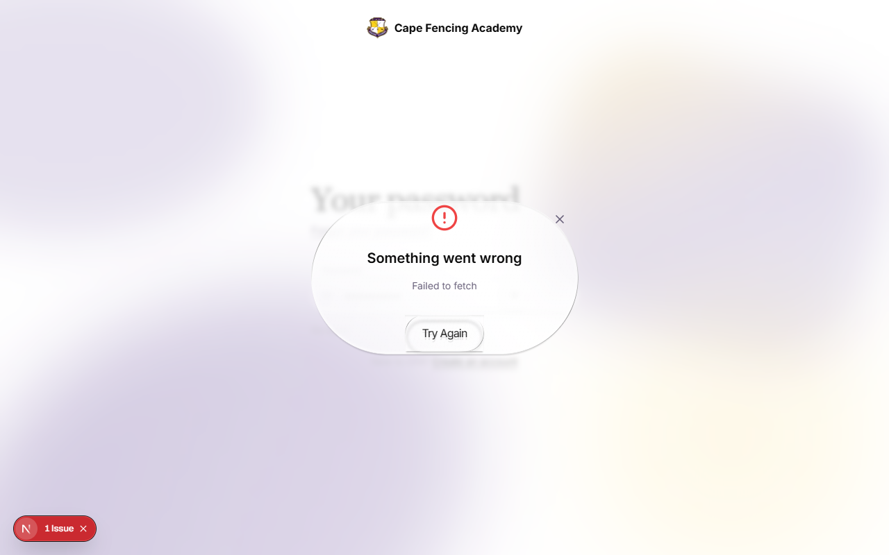

P0·Phase 00·Open
Login cannot reach configured Supabase host
Valid credentials produce a DNS failure before Supabase can authenticate the user.
Actual
The login modal shows “Failed to fetch” and Chrome reports net::ERR_NAME_NOT_RESOLVED.
Expected
A valid login creates a session and redirects to /protected.
Steps to reproduce
- Open
/auth/login. - Enter the seeded admin email.
- Enter the seeded password and select Log in.
- Observe the error modal.
Evidence
Failed to load resource: net::ERR_NAME_NOT_RESOLVED
TypeError: Failed to fetch
at SupabaseAuthClient.signInWithPassword